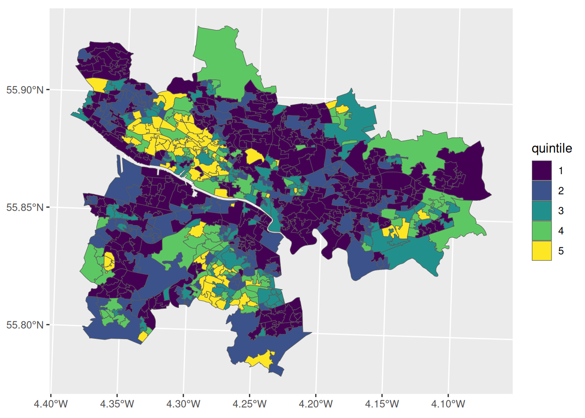
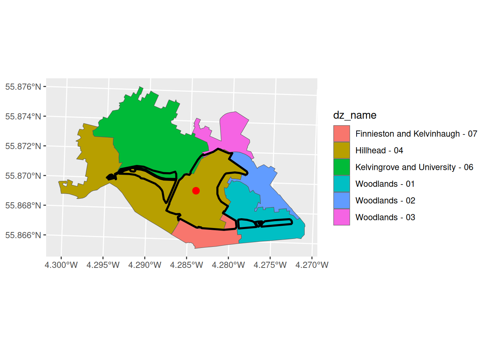
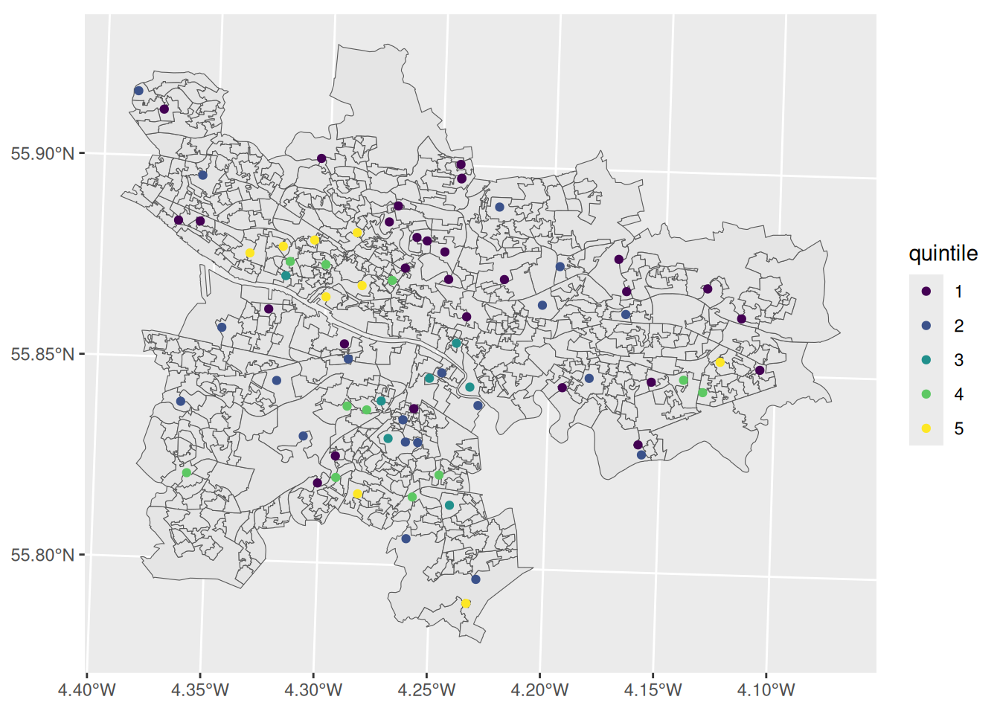
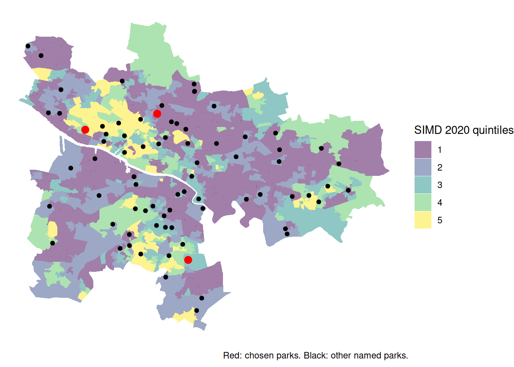
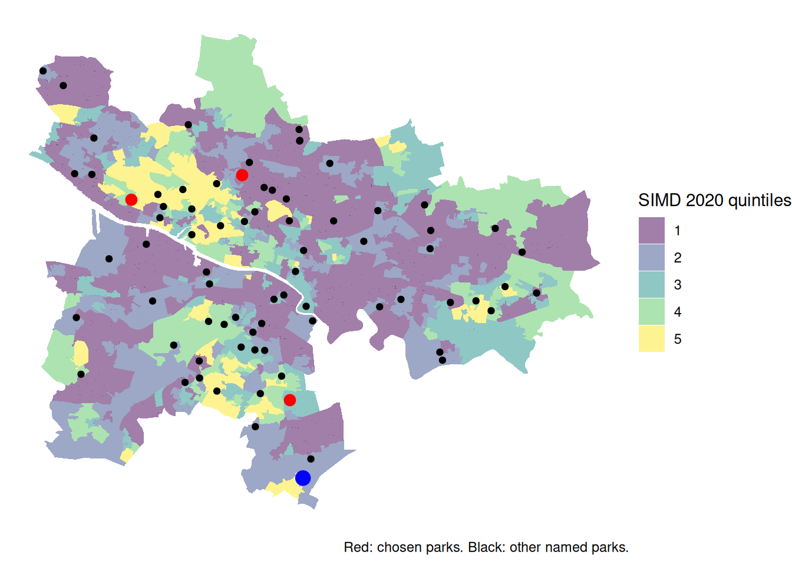

download.file("https://maps.gov.scot/ATOM/shapefiles/SG_SIMD_2020.zip",
"data/simd_2020.zip")
download.file("https://api.os.uk/downloads/v1/products/OpenGreenspace/downloads?area=NS&format=ESRI%C2%AE+Shapefile&redirect",
"data/greenspace_ns.zip", mode = "wb")
unzip("data/simd_2020.zip", exdir = "data/simd_2020")
unzip("data/greenspace_ns.zip", exdir = "data/greenspace", junkpaths = TRUE)Saw we were doing ethnography of Glasgow parks and as part of that wanted to select parks across different areas based on SIMD data zones.
Geospatial Data
We can use the following data:
- Scottish Index of Multiple Deprivation - and more specifically its spatial data - to create a map of Glasgow with data zones shared by which quantile they fall into.
- OS Open Greenspace will info including land “designed, constructed, managed, and maintained as a public park or garden”.
The code in the next session already has the web addresses for the data we are using. The below just provides the steps I used for getting those web addresses:
The SIMD data was found by:
- Going to the main SIMD data and resources page.
- Within the ‘Data’ section you’ll see a link to “Scottish Spatial Data website”.
- On that page, scrolls down to the ‘Download’ section and there is the link for the “Scottish Index of Multiple Deprivation 2020” that we are using.
- Right-click the link and ‘Copy link address’
The address for OS Open Greenspace data was found by:
- Going to the OS Data Hub download page.
- Under “Specify an area”, choosing “Set a custom area”. This will open a make of the UK with areas cut into 100 km tiles (i.e. squares). Each is named via two letters.
- If you look at Glasgow, you will see it is in the tile labelled ‘NS’. You can either simply Click the NS tile or type it into the “Enter map tile references” on the left-hand side and hit Enter.
- Click the ‘Save selection’ button in the bottom left corner. This will take you back to the main page with your selection in the ‘Specify an area’ part of the form.
- Under “Data format”, choose “ESRI Shapefile”.
- Right-click it and select ‘Copy link address’.
Downloading the Data
We can download and ‘unzip’ the data with the following:
-
download.file()is from base R and takes a web address (first argument) and location want to save it’s content (the second argument). Here the web address points to zip files which we are then saving in our existingdatasub-folder for our R project. - We include
mode = "wb"for our greenspace file as the web address does not end in.zip. We technically only need this on Windows - Linux and macOS will download the file without issue. However, even if not using Windows, it is good practice to still include this code in case we are sharing it with anyone who is using Windows. The reason for the code is that by default Windows treats files as plain-text and Microsoft being Microsoft stores new lines for plain-text slightly different to how Linux and macOS do it. As a result, files that are not plain-text can end up unuseable as the symbols used mean something else. Themode = "wb"switching the download mode to “write binary” and prevents the files being edited on Windows. -
unzip()is another base R function which let’s us extract the content of our zip files, here also creating a subfolder for each dataset. As will see if look in the folders after running the code, there are a decent number of files for each dataset, so it makes sense to split them into sub-folders to keep things organised. In contrast, if each dataset was contained in a single file, we wouldn’t need a sub-folder for each. -
junkpaths = TRUEis used as the greenspace zip file has its own folder structure already inside it, adding this argument then ‘junks’ - i.e. ignores - any folder structure within the zip file and instead extracts everything into the single folder we specified (in this casedata/greenspace).
Note, if you are on a slow internet connection, R may time-out the file download. By default R gives certain tasks a 60 second timer, killing the task if it is not complete by then. You can fix that by running options(timeout = 600) - or whatever number seems adequate based on the tasks you are doing - and run the code to download the files again.
NoteAside: Code readability and practical considerations
There is no one single ‘correct’ way to write code that applies across all contexts.
Even in comparing programming and markup languages, we can see different decisions get made about what syntax to use. We have seen how the top of R Markdown files have a YAML header and in a few of our examples we have used JSON data. Both of these are ways to store data using key-value pairs.
YAML aims to be more ‘human-readible’ - and accessible - so makes use of ‘white space’ to structure the data. This means that any idents are required as it has meaning to how software will read the data. It also makes it easier to write, which is why it is often used for declaring any configuration options.
JSON on the other hand has a syntax structured using curly braces, square brackets, commas, and so on. This is easier for computers to read, and if working with very high volumes of data takes up less storage space than YAML as the ‘white space’ is optional. That is why some JSON files we download are an endless string of text with no line breaks.
However, it becomes easier to see how the YAML and JSON are similar if we add white space to make the JSON more ‘human-readable’.
Here is some example data in YAML:
#| eval: false
person:
name: John Smith
age: 52
address:
city: Kirkcaldy
country: Scotland
hobbies:
- gardening
- chessAnd the same in JSON using optional white-space to make it easier to read:
#| eval: false
{
"person": {
"name": "John Smith",
"age": 52,
"address": {
"city": "Kirkcaldy",
"country": "Scotland"
},
"hobbies": [
"gardening",
"chess"
]
}
}Whilst there are other differences between the two, the decision of which is ‘better’ is about which is more practical in the context for which it is going to be used.
Then each within a single programming language, we have seen how there can be different ‘design languages’ behind the design of functions we use. iris is a dataset about iris plants built into R which can use without loading anything. So we can use it here to demonstrate differences between ‘base R’ and the tidyverse.
Base R:
table(iris$Species[iris$Sepal.Length > 5])
setosa versicolor virginica
22 47 49 Tidyverse:
iris |>
filter(Sepal.Length > 5) |>
count(Species) Species n
1 setosa 22
2 versicolor 47
3 virginica 49Neither of these is ‘better’ than the other. Base R is more compact and can be used without installing and loading additional ‘dependencies’ (like the Tidyverse). R is also a general purpose language that whilst aimed primarily at data analysis, still needs to support other programming features. The Tidyverse, in contrast, can assume a narrow set of use cases and have therefore designed their packages around them with an emphasise too on readibility - hence the use of pipes (|>) to help separate and order functions in a ‘this, then this, then this’ style and with functions named around verbs - the action they do, filter(), select(), summarise(). We can read it’s code example then as “take the iris dataset, filter it for where sepal length is greater than 5, and then produce a count for each species”.
We sometimes also see features introduced in packages make their way back into the base programming language if they are popular enough. For instance, the pipe operator was first introduced by the Tidyverse, but proved so popular that it was incorporated into base R.
As we continue down through a programming language, there are also different stylistic options for how to write the code. For example, in R white space is optional, but most style guides - like the Tidyverse style guide - advise including it to make code easier to read. The Tidyverse style guide also advises things like using snake case (example_object_name) to name objects - like dataframes and their columns - over alternative styles like camel case (exampleObjectName). Again, neither is clearly better in all circumstances than the other, but having a convention for how to name objects does help add consistency to the code you write.
That then - finally - brings us to the code we used to download the files. Across our examples, we have included the URL - i.e. the web address - directly inside the download.file() function. This is often the easiest option, which keeps code compact and avoids creating objects that are not strictly needed.
However, we could actually create objects taht store the URL values before passing these as arguments to download.file():
simd_url <- "https://maps.gov.scot/ATOM/shapefiles/SG_SIMD_2020.zip"
greenspace_url <- "https://api.os.uk/downloads/v1/products/OpenGreenspace/downloads?area=NS&format=ESRI%C2%AE+Shapefile&redirect"
download.file(simd_url, "data/simd_2020.zip")
download.file(greenspace_url, "data/greenspace_ns.zip", mode = "wb")That obviously though creates objects we only use once, but are now left cluttering our R environment despite never using them again. If we were to repeatedly reuse those URLs for other purposes, it may make more practical sense to have objects for them to simplify the rest of our code. Similarly, code examples sometimes break code down like the above as - depending on what is being explained - it can help make it easier for beginners to see and understand how code works. The above, for example, could potentially be used to explain to beginners how an object can store a text string and be used anywhere you could normally write a string of text. By shortening the code between the () for download.file() it can also make it easier to see what arguments get passed to it - especially if working with extremely long URLs.
That code which achieves the same end result - like downloading a couple of files - can be written in different ways is a strength of programming languages. It does though add to sense of confusion when first learning to code. When starting out, the most important thing is that your code ‘works’ and reliably does what you need it to. Whilst there may be ‘better’ ways to write some code - especially to remove any repetitive aspects - at the end of the day it doesn’t matter as long as the end result is what you need and accurate. As you continue with R you’ll build a sense of when and how to use different structures and patterns for your code. Indeed, coding is like writing, where you may need to write out an initial ‘draft’ of your code, then go back through it ‘revising’ (or to use coding term ‘refactoring’) it. Some of those changes may be about what is practical, making the code run more efficiently, improving readability, or simply just come down to stylistic preferences.
Packages
Then load packages (first installing any where need to):
-
sflets us work with spatial data, and once read into R its objects are data frames with an additional column namedgeometrywhich stores the row’s shape data. By storing the data read in within R’s usual data frame structure, it means that we can usefilter(),mutate(), and all the rest of the functions we normally use with this data too.- As wee note, when loading in data
sfwill print out version information about the software being used. That is just regular standard messaging it always includes and not an error.
- As wee note, when loading in data
-
janitorgives us our every usefulclean_names()function to convert all data frame column names intosnake_case. -
readxlis part of the tidyverse but as not all data analysis projects will be working with Excel files needs to be loaded separately. We are only loading it in this example merely to read in data from an optional file. It is not needed for directly working with the spatial data we are using.
Spatial Data
Base R has a nice little function list.files() which can use in the Console to view files in a folder - saving you from needing to use the Files tab to manually browser through the folders. Either way is perfectly fine. One benefit of the function is it makes it easy to also include code on this page that will list all the files for me:
list.files("data/simd_2020")[1] "SG_SIMD_2020.CPG"
[2] "SG_SIMD_2020.dbf"
[3] "SG_SIMD_2020.prj"
[4] "SG_SIMD_2020.sbn"
[5] "SG_SIMD_2020.sbx"
[6] "SG_SIMD_2020.shp"
[7] "SG_SIMD_2020.shp.xml"
[8] "SG_SIMD_2020.shx"
[9] "SIMD2020v2 - GIS files - glossary.xlsx"Having this collection of files is common when working with shapefiles which for each dataset are a collection of files with the same name but different endings, which also need to be kept in the same folder. The one’s important for us:
-
.shp- the main file with the shapes -
.shx- an index of where each shape starts in the.shpfile -
.dbf- a table with a row for each shape and columns for any variables (name, SIMD rank, etc) -
.prj- the coordinate system being used. Shapes are stored as a list of points. For example, for a square what the coordinates for it would be the points where each corner is. There are though different ways - i.e. systems - to represent coordinates. The coordinate system then gives specific meaning for how to interpret and use the coordinates in the data. For our data, this is metres on the British National Grid.
Thankfully, despite the number of files, with R we just need to read in only the .shp files. This is a standard convention used across software when working with spatial data, where opening/reading a .shp file will also automatically read in data from the .shx, .dbf, and prj files - and why each datasets files need to have the same name before the . endings and all be in the same folder.
SIMD data
Reading in the .shp SIMD file then also gives us access to information like the SIMD quintiles (1 = most deprived, 5 = least deprived) for each ‘shape’ - i.e. each SIMD data zone.
We could read in, do initial tidy up of names, filter, and create a factor variable for the SIMD quintiles all together as so -
simd_map <- read_sf("data/simd_2020/SG_SIMD_2020.shp") |>
clean_names() |>
filter(la_name == "Glasgow City") |>
mutate(quintile = factor(quintilev2))However, to get a better sense of the data, let’s go through things bit by bit:
simd_all <- read_sf("data/simd_2020/SG_SIMD_2020.shp") |>
clean_names()-
read_sf()reads our.shpfile - bringing in all the other info from the.shx,.dbf, andprjfiles - as a data frame (i.e. a ‘tibble’ of rows and columns). -
clean_names()cleans up the worst of the mess in the column names, turningLANametola_name,Quintilev2toquintilev2and so on.
Exploring SIMD Data
To get basic idea of what the simd_all data frame contains, we can simply run a line of code with just the code name:
simd_allSimple feature collection with 6976 features and 51 fields
Geometry type: MULTIPOLYGON
Dimension: XY
Bounding box: xmin: 5513 ymin: 530252.8 xmax: 470323 ymax: 1220302
Projected CRS: OSGB36 / British National Grid
# A tibble: 6,976 × 52
data_zone dz_name la_name sape2017 wape2017 rankv2 quintilev2 decilev2
<chr> <chr> <chr> <dbl> <dbl> <dbl> <dbl> <dbl>
1 S01006506 Culter - 01 Aberde… 894 580 4691 4 7
2 S01006507 Culter - 02 Aberde… 793 470 4862 4 7
3 S01006508 Culter - 03 Aberde… 624 461 5686 5 9
4 S01006509 Culter - 04 Aberde… 537 307 4332 4 7
5 S01006510 Culter - 05 Aberde… 663 415 3913 3 6
6 S01006511 Culter - 06 Aberde… 759 453 6253 5 9
7 S01006512 Culter - 07 Aberde… 539 345 5692 5 9
8 S01006513 Cults, Bields… Aberde… 788 406 6177 5 9
9 S01006514 Cults, Bields… Aberde… 1123 709 6715 5 10
10 S01006515 Cults, Bields… Aberde… 816 529 6363 5 10
# ℹ 6,966 more rows
# ℹ 44 more variables: vigintilv2 <dbl>, percentv2 <dbl>, inc_rate <chr>,
# inc_num_dep <dbl>, inc_rankv2 <dbl>, emp_rate <chr>, emp_num_dep <dbl>,
# emp_rank <dbl>, hlth_cif <dbl>, hlth_alc_sr <dbl>, hlth_drug_sr <dbl>,
# hlth_smr <dbl>, hlth_dprs_pc <chr>, hlth_lbwt_pc <chr>, hlth_emerg_s <dbl>,
# hlth_rank <dbl>, edu_attend <chr>, edu_attain <dbl>, edu_no_quals <dbl>,
# edu_partici <chr>, edu_univer <chr>, edu_rank <dbl>, g_acc_petrol <dbl>, …In R, we can do this with any object, where exactly what gets printed out varies based on the type of object. For our simd_all object though we can see:
- It contains 6,976 “features” (rows), one for each data zone, and 51 “fields” (columns/variables) not counting the additional
geomtrywith the shape gap. - The geometry type is
MULTIPOLYGON, meaning areas can be more than one part - say a park has a main road going right through the centre of it and decided the road should not be part of the shape data for the park, then you can store the ‘single’ park as two shapes, one either side of the road. - The “Projected CRS” is the coordinate system being used - where can see our coordinate grid is the British National Grid.
And can use ggplot’s geom_sf() to see how the shape data (the map of the data zones) can be combined with regular data - like the SIMD quintiles - to create a map:
Here:
-
geom_sf()is the ggplot layer for drawingsfdata. - We use
aes(fill = quntilev2)to colour data zones by ther SIMD quintile (it isn’t the nicest map here with everything in shades of blue as we have yet to coercequintilev2into a factor variable, but we’ll return later to how can fix that - at present though R is treating it as a continuous variable which is why it uses single shade of lightest to darkest rather than different colours for each category) - We also add in
colour = NAto not draw in the outlines for data zones. Pending on the data the outlines can map the plot too messy / result in it being hard to easily see some smaller zones.
The Data Frame Variables
It is good practice to read data documentation to understand what is being measured, how data was collected, and so on. You can find relevant SIMD documentation online.
The zip file we downloaded though also includes a nice wee glossary - which is not sufficient on its own - but is useful to get key info and can be good to get quick reminders rather than constantly switching between RStudio and a browser.
Let’s then read in this glossary, which is provided as an Excel file:
glossary <- read_excel("data/simd_2020/SIMD2020v2 - GIS files - glossary.xlsx")
glossary# A tibble: 48 × 4
...1 `Indicator label` `Indicator type` Description
<chr> <chr> <chr> <chr>
1 Geography DataZone Code 2011 data zone
2 <NA> LAName Name Council area name
3 Population SAPE2017 Count 2017 NRS small area populati…
4 <NA> WAPE2017 Count 2017 NRS small area populati…
5 Overall SIMD Rankv2 Rank Rank
6 <NA> Quintilev2 Quantile Quintile
7 <NA> Decilev2 Quantile Decile
8 <NA> Vigintilv2 Quantile Vigintile
9 <NA> Percentv2 Quantile Percentile
10 Income IncRate Percentage Percentage of people who are…
# ℹ 38 more rows- The
...1is just due to the Excel file’s top-left cell being empty. It’s column though marks where each group begins. For example, the Geograph group contains DataZone and LAName. - We can see in rest of the columns the name for each indicator (how they appear before we ran
clean_name()), its type (which is why this can be a handy reference when checking what need tomutate()), and short description - in this case, some a little bit too short, but similar glossaries in other datasets can include slightly longer descriptions.
Creating Glasgow subset
We can use two common Tidyverse functions to keep only the map data we need and coerce our main variable of interest, the SIMD quintiles:
- We
filter()to keep only rows where the Local Authority name (thela_namecolumn) is “Glasgow City”, using==with two equals signs. As opposed to the regular=which assigns a value, using==is R’s “equal’s to” operator. What filter then does is go through each row and checks is the value in thela_namecolumn a match to “Glasgow City”, returning eitherTRUEorFALSE, where only rows that returnedTRUEare kept. - Then
mutate()let’s us turn quintile into afactor(). Despite the values being 1-5, we should still convert it to a factor so R does not treat the 1-5 as a continuous variable (like temperature), but instead ordinal categories (like gold, silver, bronze). We usequintile =to create this as a new column with a better name than the originalquintilev2. This is entirely optional and we could have writtenquintilev2 = factor(quintilev2)and then kept referring toquintilev2in code below. I like to rename variables though to things that are easier to remember and read.
Now we have a factor variable with each quintile treated as a category we can use relevant ggplot functions to produce a nicer looking map.
ggplot() +
geom_sf(data = simd_map, aes(fill = quintile)) +
scale_fill_viridis_d()
- We have not included
colour = NAthis time, just so you can also see how the map looks if do include border colours. - As we now have categories, we have different colours rather than light - dark scale of single colour.
- We are also using
scale_fill_viridis_d()which uses colours which are more accessible for common forms of colour blindness - and, in my view, actually look bit nicer too. There are a range of palettes which are all listed on page you’ll go to if click the link forscale_fill_viridis_d().
Greenspace Data
Again with our OS Open Greenspace data we could load it in, clean the names, filter it to keep only named parks, and create a hectares column that is most human readible than the datasets metres squared:
parks <- read_sf("data/greenspace/NS_GreenspaceSite.shp") |>
clean_names() |>
filter(`function` == "Public Park Or Garden", !is.na(dist_name1)) |>
mutate(hectares = as.numeric(st_area(geometry)) / 10000)However, let’s go through this bit by bit whilst exploring the data:
greenspaces <- read_sf("data/greenspace/NS_GreenspaceSite.shp") |>
clean_names()So -
- We again read in our data using
read_sf()and only need to read in the file ending.shp. - Janitor’s
clean_names()then goes through renaming columns likedistName1all into snake casedist_name1.
Exploring the greenspace dat
At present our data includes every kind of site in the NS tile, not just Glasgow. However, that will get addressed later when we link our two datasets.
Let’s first then have a llok at our datasets variables:
glimpse(greenspaces)Rows: 7,483
Columns: 7
$ id <chr> "5A80AAE2-62B6-5B9B-E063-CF00A60A07BA", "5A80AC21-0A0F-5B9B…
$ `function` <chr> "Religious Grounds", "Play Space", "Public Park Or Garden",…
$ dist_name1 <chr> "St Thomas' Roman Catholic Church", NA, "Foulshiels Park", …
$ dist_name2 <chr> NA, NA, NA, NA, NA, NA, NA, NA, NA, NA, NA, NA, NA, NA, NA,…
$ dist_name3 <chr> NA, NA, NA, NA, NA, NA, NA, NA, NA, NA, NA, NA, NA, NA, NA,…
$ dist_name4 <chr> NA, NA, NA, NA, NA, NA, NA, NA, NA, NA, NA, NA, NA, NA, NA,…
$ geometry <MULTIPOLYGON [m]> MULTIPOLYGON (((299502.8 66..., MULTIPOLYGON (…-
glimpse()is lovely little utility function which gives us a quick ‘glimpse’ into our data. - It opens first with the number of rows (7,483) and columns (7) in our data set.
- Then it lists each column in turn with it’s name, data type (R reads most of these in as character data -
<chr>), and values of first few rows. -
functionhas back-ticks around it as it is a ‘reserved’ word used by R. Whenever an object name is the same as a reserved word we just need to place back-ticks around it whenever we use it, and thankfully functions likeglimpse()will also include back-ticks in their output to let us know too. (You will rarely run into such situations in practice.) - Can also see our geometry is
MULTIPOLYGONand in[m]metres squared.
As we can see, the function column lists what ‘function’ each greenspace plays. There are few different ways to view all values used, but let’s do it via count() so can also see how many there are of each type:
greenspaces |>
st_drop_geometry() |>
count(`function`)# A tibble: 10 × 2
`function` n
<chr> <int>
1 Allotments Or Community Growing Spaces 134
2 Bowling Green 454
3 Cemetery 315
4 Golf Course 187
5 Other Sports Facility 775
6 Play Space 2769
7 Playing Field 779
8 Public Park Or Garden 1253
9 Religious Grounds 668
10 Tennis Court 149- We use
st_drop_gemotry()just to initially turn the object with our data into a data frame without any spatial data. If we did not drop this data first, when doing acount()R would still give the same numbers but it will take longer due to how it processes the spatial data. Here it only adds ~1 second to how long the code takes to run, but that quickly adds up if have a lot of code and becomes more serious issue as well as the amount of data we are working with increases. -
count()then forfunction(with back-ticks) then shows us all the different types of green spaces our data contains.
Creating subset for named parks
We can then use the information we learnt from looking at the function variable to filter our data:
parks <- greenspaces |>
filter(`function` == "Public Park Or Garden", !is.na(dist_name1)) |>
mutate(hectares = as.numeric(st_area(geometry)) / 10000)- We
filter()for the data we want, with the function also letting us specify multiple conditions. - Our first condition looks for rows where
function(again with back-ticks) is equal to (==) “Public Park Or Garden” (ensuring to match the capitaliation). - Our second condition using
!is.na().is.na()checks whether a value is ‘not available’,NA. The!is the ‘not’ operator. Normally,is.na()would returnTRUEif the value isNA. By adding!we inverse that behaviour, returningTRUEfor all values that are notNA. This then makes it easy to find all rows wheredist_name1has a name listed for the park / garden. - Sadly not all parks / gardens are named. For our example, just to keep things easier, we are going to assume we only want to look at ones that have a name in the data. In practice you would want to do some further exploration of those without names and any reasons why they do not have names. The OS documentation says names are filled in “where they can be sourced from relevant existing data holdings”“, so”only a limited number of records”. This makes the data slightly messy as it is the phrasing suggests they try to source names from multiple sources rather than this being for example the “official” name. As can also see there is also
dist_name2,dist_name3, anddist_name4which are used if a greenspace is known under different names too. - (Optional) as each park’s area is in square metres we can also create an additional column that converts that to hectares instead. We first need to use
st_area()to get the area from the shape data which is stored in thegeometrycolumn. That returns the data with a[m^2](metres squared) label, so we also need to wrap it withas.numeric()so R returns it as a plain number before we then/ 10000.
Viewing the named parks
Let’s visualise both of our datasets together:
It’s not the nicest of maps, but helps us get better sense of the data:
- With
ggplot()we add+layers together in the order that we list then. (NOTE, it is incredibly - and painfully - easy to forget to add each+at the end of each line before the next layer, or conversely adding a+on the very final layer which will result in an error as R then expects another line of code with another layer after it. If you run into errors runningggplot()code then, the best first thing to check is that the+s are all correct.) - So, we first add our SIMD map that we filtered to only include Glasgow and use
geom_sf()with just ourdata = simd_map. That draws the outlines of all of Glasgow City’s SIMD data zone with no colour filling the spaces. - We can then use
geom_sf()again to draw ourdata = parksontop of the SIMD data and alsofill = "darkgreen"just to make it (slightly) easier to distinguish parks from SIMD data zones.
As can see it’s a bit hard to read as our parks data still covers the whole NZ tile and not just Glasgow City. We can lazily fix that when we join our datasets - hence why not including it as its own separate step during this initial loading and cleaning of the data.
Joining our datasets
When joining datasets we need some form of shared information between them that makes sense. That will vary based on the type of data and can sometimes be incredibly simple or require a few steps first.
Thankfully as our spatial data both using the British Nation Grid for their coordinate system, they can easily be joined.
To confirm that though we can direct compare the two:
-
st_crs()is a function to grab an object’s coordinate reference system. - Here then we are asking “is the coordinate system for the parks data the same as the coordinate system for the simd_gap data”.
- As they both use the same coordinate system this line of code returns
TRUE.
Again, four our purposes, we are going to assume we want to turn each park into a point on a map - which will become clearer further down - rather than drawing its exact shape. Depending on your analysis you might not want to do that.
We can then turn our parks into points and join the data with the simd_map:
glasgow_parks <- parks |>
st_point_on_surface() |>
st_join(simd_map, left = FALSE)-
st_point_on_surface()converts a shape to a single point and ensures that point is drawn something within the original shape’s surface. Image you had an oddly crescent shaped park, another option likest_centroid()that adds a point in the ‘centre’ of the area could actually draw the point outside the crescent. Similarly, a park split in two by a main road going through it could get a point drawn on the road and not within an area belonging to the park proper. - Don’t worry about the Warning message, it is basically just saying all the existing columns (the park name, function, hectares) are being copied over too as attributes of the points being created.
-
st_join()let’s us join our parks data with the simd_map data, which R can handle directly given they both use the same coordinate system. What this means is the newglasgow_parksobject we are creating will have columns from both theparksandsimd_mapdata. The SIMD columns will add values based on which SIMD data zone each of the points we are creating falls into. This then means each of our parks now has a SIMD quintile value. (A park could be in 2+ different data zones, so converting first to points also removes that as an issue. If not wanting to covert to points there are various ways to handle it via extra steps. There is no ‘correct’ single way to do it, options would include: averaging the qunitiles of the data zones the park lies across, weighting the quintiles by how much of the park is in each data zone, going with the data zone that the park’s entrance is in, and so on. As with most things, what is key is justifying the decision based on what your analysis is doing.) - Importantly, we use
st_join()rather thanleft_join()or similar as you will see in our other examples for how to join different datasets. Functions likeleft_join()requires each data frame to have a column with shared values, like say both of them have a columnnamewith each person’s name being the same in both data frames. The shape of our parks and SIMD data zones though are not the same.st_join()though let’s us join them by the shared coordinate system instead. - We also pass
left = FALSEas an argument. By default,st_join()keeps all rows in our originalparksdata frame.left = FALSEdrops any rows where the point calculated for the park does not match any of the data zones in thesimd_mapdata. As we have filtered thesimd_mapto only include the data zones for Glasgow City, this means we can simultaneously join our two data frames and drop all parks which are not within the Glasgow City region.
Visualising a single park
Just to help make clearer why we are converting parks to single point and the type of things we would have to consider if we did not, let’s take a look at Kelvingrove park.
First let’s create the objects we will need:
kelvingrove <- parks |>
filter(dist_name1 == "Kelvingrove Park")
kelvingrove_data_zones <- st_filter(simd_map, kelvingrove)
kelvingrove_point <- st_point_on_surface(kelvingrove)We now have three objects:
-
kelvingrovewhich includes our parks data just for Kelvingrove Park. -
kelvingrove_data_zonesis our SIMD data with just the data zones that overlap with our parks data for Kelvingrove Park. Thest_filter()function takes oursimd_mapas its first argument and ourkelvingroveobject as the second for what we are filtering for. It then goes through all thesimd_mapdata and checks for shapes would overlap with outkelvingroveshapes if drawn on a map. -
kelvingrove_pointusesst_point_on_surface()so in addition to ourkelvingrovewith the shape data for drawing Kelvingrove Park on a park, we have another object which simply has a single point that lies within the area the Kelvingrove Park shape covers.
Actually drawing a map will make this clearer:

- Our first layer draws our
kelvingrove_data_zoneswith the SIMD data zones which overlapped with the area covered by Kelvingrove Park. We are adding infill = dz_nameto give each SIMD data zone a different colour and make it easier to see how many Kelvingrove’s area falls into. - Our next layer is our
kelvingroveshape data with the area Kelvingrove covers which we do not fill in so can still see the SIMD zones underneath and use thicker line for the outline to make it distinct. As can also see Kelvingrove Park is stored as multiple shapes given there are roads and paths which divide it up. This is why our greenspace data is multipolygon as each greenspace is not necessarily a single continuous area. - Our final layer is the
kelvingrove_pointwith just a dot that lies wtihin the area of Kelvingrove Park.
So, as can see from the above map, Kelvingrove crosses six different SIMD data zones, with most of it in Hillhead, and a few - like “Woodlands - 03” - only a slither of the park falls into. As noted above, our code assigns to each of our parks the SIMD quintile (the overall deprivation measure) based on where the point is. For Kelvingrove Park then that will be Hillhead. One alternative option could have been to calculate which data zone most of the park falls into - which here would again have been Hillhead, but not necessarily the case for all parks. Again, as noted above, there are various other options too - none of which is ‘correct’ in all situations. It is always what makes sense in relation to your analysis. For us, we merely wanted a straight forward option, but we can still justify it as the point is create roughly at the calculated centre of each park, where would also need to note the limitation that it is a rough measure compared to doing additional calculations such as which data zone most of the park falls into, weighting each data zone’s quintile by % of the park in its area, and so on.
Looking at our joined data frame
Let’s take a glimpse at our glasgow_parks data frame that joined our parks and simd_map data frames:
glimpse(glasgow_parks)Rows: 76
Columns: 60
$ id <chr> "5A80AA97-1C32-5B9B-E063-CF00A60A07BA", "5A80AAC8-0383-5…
$ `function` <chr> "Public Park Or Garden", "Public Park Or Garden", "Publi…
$ dist_name1 <chr> "Blairtummock Park", "Crosshill Park", "Garrowhill Park"…
$ dist_name2 <chr> NA, NA, NA, NA, NA, NA, NA, NA, NA, NA, NA, NA, NA, NA, …
$ dist_name3 <chr> NA, NA, NA, NA, NA, NA, NA, NA, NA, NA, NA, NA, NA, NA, …
$ dist_name4 <chr> NA, NA, NA, NA, NA, NA, NA, NA, NA, NA, NA, NA, NA, NA, …
$ geometry <POINT [m]> POINT (267693.7 665450.6), POINT (268198.9 664023.…
$ hectares <dbl> 21.96923789, 0.68216271, 4.47814759, 0.31171470, 3.99007…
$ data_zone <chr> "S01010122", "S01010089", "S01010099", "S01010081", "S01…
$ dz_name <chr> "North Barlanark and Easterhouse South - 05", "Bailliest…
$ la_name <chr> "Glasgow City", "Glasgow City", "Glasgow City", "Glasgow…
$ sape2017 <dbl> 511, 694, 680, 638, 599, 726, 834, 627, 903, 1067, 620, …
$ wape2017 <dbl> 373, 477, 438, 386, 418, 483, 591, 396, 552, 668, 472, 6…
$ rankv2 <dbl> 5, 1376, 5603, 5238, 4264, 16, 2378, 831, 759, 242, 1520…
$ quintilev2 <dbl> 1, 1, 5, 4, 4, 1, 2, 1, 1, 1, 2, 1, 2, 2, 1, 2, 1, 2, 2,…
$ decilev2 <dbl> 1, 2, 9, 8, 7, 1, 4, 2, 2, 1, 3, 1, 3, 3, 1, 4, 1, 3, 4,…
$ vigintilv2 <dbl> 1, 4, 17, 16, 13, 1, 7, 3, 3, 1, 5, 1, 5, 6, 2, 7, 1, 5,…
$ percentv2 <dbl> 1, 20, 81, 76, 62, 1, 35, 12, 11, 4, 22, 4, 23, 29, 10, …
$ inc_rate <chr> "46%", "18%", "5%", "6%", "5%", "44%", "14%", "25%", "29…
$ inc_num_dep <dbl> 233, 123, 32, 38, 31, 319, 117, 157, 262, 368, 111, 368,…
$ inc_rankv2 <dbl> 17.0, 1777.0, 5133.0, 4623.0, 4933.0, 31.0, 2434.0, 849.…
$ emp_rate <chr> "37%", "16%", "3%", "4%", "4%", "33%", "11%", "17%", "20…
$ emp_num_dep <dbl> 135, 74, 15, 17, 19, 157, 62, 66, 108, 143, 65, 143, 65,…
$ emp_rank <dbl> 15.0, 1306.0, 5545.5, 4839.0, 4858.0, 41.0, 2539.0, 1083…
$ hlth_cif <dbl> 305, 175, 60, 95, 85, 290, 160, 205, 200, 225, 155, 225,…
$ hlth_alc_sr <dbl> 399, 162, 52, 61, 46, 327, 105, 101, 243, 240, 108, 240,…
$ hlth_drug_sr <dbl> 397, 202, 24, 0, 26, 182, 89, 210, 119, 93, 151, 93, 159…
$ hlth_smr <dbl> 182, 129, 67, 63, 101, 172, 127, 145, 119, 206, 144, 206…
$ hlth_dprs_pc <chr> "35%", "27%", "14%", "17%", "17%", "33%", "22%", "26%", …
$ hlth_lbwt_pc <chr> "0%", "16%", "4%", "0%", "0%", "8%", "14%", "6%", "6%", …
$ hlth_emerg_s <dbl> 203, 159, 83, 97, 96, 222, 145, 161, 150, 190, 133, 190,…
$ hlth_rank <dbl> 9, 620, 5014, 3897, 3778, 13, 1246, 482, 477, 270, 1383,…
$ edu_attend <chr> "64%", "69%", "93%", "85%", "83%", "62%", "82%", "76%", …
$ edu_attain <dbl> 4.59, 5.81, 6.12, 6.17, 5.85, 4.81, 5.73, 4.89, 5.73, 4.…
$ edu_no_quals <dbl> 278, 167, 86, 105, 103, 271, 133, 209, 158, 264, 197, 26…
$ edu_partici <chr> "4%", "0%", "0%", "1%", "3%", "7%", "0%", "4%", "3%", "9…
$ edu_univer <chr> "2%", "9%", "13%", "14%", "9%", "1%", "13%", "6%", "6%",…
$ edu_rank <dbl> 54, 2358, 5824, 4732, 3681, 38, 3782, 906, 2463, 198, 18…
$ g_acc_petrol <dbl> 2.72, 1.39, 3.17, 1.14, 4.31, 2.60, 2.33, 3.47, 1.44, 3.…
$ g_acc_dtgp <dbl> 2.22, 3.22, 3.61, 2.36, 5.07, 1.35, 1.07, 1.88, 1.24, 2.…
$ g_acc_dt_post <dbl> 2.13, 1.58, 2.84, 3.40, 5.20, 2.30, 1.25, 1.59, 2.13, 1.…
$ g_acc_dt_psch <dbl> 3.50, 3.09, 2.26, 2.72, 3.00, 3.68, 2.82, 2.09, 1.93, 2.…
$ g_acc_dt_ssch <dbl> 3.91, 4.83, 3.17, 4.53, 4.94, 4.02, 6.74, 7.75, 3.33, 4.…
$ g_acc_dt_ret <dbl> 2.41, 5.86, 6.98, 4.39, 6.03, 2.23, 3.13, 3.97, 3.12, 5.…
$ g_acc_ptgp <dbl> 5.04, 10.15, 8.64, 6.50, 13.65, 2.87, 3.64, 7.53, 3.10, …
$ g_acc_pt_post <dbl> 5.57, 5.08, 6.94, 9.60, 15.82, 5.25, 3.59, 5.87, 6.78, 4…
$ g_acc_pt_ret <dbl> 6.18, 15.99, 15.30, 11.24, 18.10, 4.87, 9.26, 15.55, 7.4…
$ g_acc_brdbnd <chr> "3%", "0%", "0%", "0%", "0%", "0%", "13%", "14%", "0%", …
$ g_acc_rank <dbl> 5325, 3938, 2807, 4664, 982, 6494, 5763, 3840, 6758, 316…
$ crime_count <dbl> 75, 29, 11, 4, 8, 60, 45, 21, 33, 86, 50, 86, 53, 47, 93…
$ crime_rate <dbl> 1475, 420, 163, 63, 134, 830, 542, 337, 367, 810, 810, 8…
$ crime_rank <dbl> 85.0, 1386.0, 3976.0, 5903.0, 4483.0, 335.0, 862.0, 1925…
$ house_num_oc <dbl> 105, 154, 65, 54, 77, 192, 97, 158, 217, 196, 121, 196, …
$ house_num_nc <dbl> 14, 37, 3, 4, 6, 13, 22, 10, 22, 21, 15, 21, 47, 56, 52,…
$ house_o_crat <chr> "25%", "23%", "9%", "8%", "12%", "25%", "12%", "26%", "2…
$ house_n_crat <chr> "3%", "5%", "0%", "1%", "1%", "2%", "3%", "2%", "2%", "2…
$ house_rank <dbl> 447.5, 452.0, 3790.0, 4397.0, 2709.0, 546.0, 2159.0, 480…
$ shape_leng <dbl> 4359.121, 3518.517, 2256.429, 2664.249, 2164.388, 2940.4…
$ shape_area <dbl> 365710.7, 186342.3, 174275.7, 199694.0, 186764.4, 336413…
$ quintile <fct> 1, 1, 5, 4, 4, 1, 2, 1, 1, 1, 2, 1, 2, 2, 1, 2, 1, 2, 2,…- As can see the columns from our original two datasets are now included together in this single data frame.
- The original
parkscolumns are shown first and then thesimd_mapones given we joinedsimd_mapto ourparksdata frame.
As each of our parks now has a SIMD quintile based on which SIMD data zone the calculated point for it fell into, we can also see how many parks are in each quintile:
glasgow_parks_df <- st_drop_geometry(glasgow_parks)
glasgow_parks_df |> count(quintile)# A tibble: 5 × 2
quintile n
<fct> <int>
1 1 29
2 2 20
3 3 7
4 4 11
5 5 9- We again use
st_drop_geomtry()to create a copy of our data frame without any of the shape data, which is faster to work with when using functions likecount(). We are now also saving this asglasgow_parks_dfas we might want to reuse this data frame for creating various tables - including descriptive stats tables for our methods and/or findings. - We can then use this new data frame object to get a count of how many parks are in each quintile.
As we do have spatial data though, we can also visualise the parks and their SIMD quintile:
ggplot() +
geom_sf(data = simd_map) +
geom_sf(data = glasgow_parks, aes(colour = quintile)) +
scale_colour_viridis_d()
- Our first layer uses
geom_sf()with oursimd_mapof the SIMD data zones for Glasgow City. We use no fill as we just want the outlines for this particular plot. - Next we use
geom_sf()again to draw dots for ourglasgow_parksand we colour these by the SIMDquintilethey fall into. - We again use
scale_colour_viridis_d()to use a colour blind friendly colour palette - and wee remind you can click the link forscale_colour_viridis_d()to open a page with other available options.
Further in we will do a different map colour coding the SIMD data zones and drawing all our dots in the same colour. Again there is no ‘correct’ version in all situations. Here we are doing plot with the dots coloured as (1) it is slightly more useful to see the parks by the quintile of their calculated point and (2) it is also an excuse to include another ggplot variant. What you’ll notice across each of the plots is we are largely using the same small set of functions and arguments, but with different options. Which plot to use in any write-up would be based on what is important for your analysis, interpretation, and argument.
Selecting a sample
For our purposes, let’s assume we were interested in parks in most deprived (1), middle (3), and least deprived (5) quintiles:
# A tibble: 45 × 5
park hectares quintile simd_rank dz_name
<chr> <dbl> <fct> <dbl> <chr>
1 Hogganfield Park 58.7 1 242 Riddrie and Hogganfiel…
2 Blairtummock Park 22.0 1 5 North Barlanark and Ea…
3 Ruchill Park 18.0 1 182 Ruchill - 02
4 Cowlairs Park 15.6 1 99 Cowlairs and Port Dund…
5 Elder Park 12.9 1 674 Govan and Linthouse - …
6 Sighthill Park 11.5 1 99 Cowlairs and Port Dund…
7 Auchinlea Park 11.5 1 16 Garthamlock, Auchinlea…
8 Maryhill Park 8.90 1 486 Summerston North - 02
9 Sandyhills Park 6.21 1 759 Shettleston North - 01
10 Glenconner Park 5.74 1 678 Sighthill - 01
11 Croftcroighn Park 4.48 1 242 Riddrie and Hogganfiel…
12 Festival Park 4.34 1 401 Ibrox East and Cessnoc…
13 Drumchapel Park 3.85 1 28 Drumry East - 04
14 Auldhouse Park 2.98 1 654 Pollokshaws - 06
15 Milton Park 2.16 1 1314 Milton East - 05
16 Blawarthill 2.12 1 1019 Yoker South - 06
17 Helensea Park 1.98 1 154 Braidfauld - 07
18 Govanhill Park 1.59 1 441 Govanhill West - 06
19 The Old School Park 0.926 1 167 Keppochhill - 03
20 Buckingham Park 0.817 1 831 Carmyle and Mount Vern…
21 Ruchill Allotment 0.799 1 14 Possil Park - 04
22 Shawhill Park 0.682 1 111 Pollokshaws - 03
23 Crosshill Park 0.682 1 1376 Baillieston East - 02
24 St Nicholas Garden 0.528 1 275 City Centre East - 04
25 The Back Garden 0.170 1 167 Keppochhill - 03
26 Woodside Community Garden 0.159 1 1354 Firhill - 03
27 Milton Community Garden 0.152 1 430 Milton East - 01
28 Milton Memorial Garden 0.101 1 430 Milton East - 01
29 Kingsway Community Garden 0.101 1 914 Scotstoun North and Ea…
30 Glasgow Green 49.3 3 3306 Calton and Gallowgate …
31 Queen's Park 45.1 3 3747 Battlefield - 06
32 King's Park 27.9 3 3810 Kingspark South - 01
33 Gorbals New Park 0.837 3 3309 Gorbals and Hutchesont…
34 Barrowland Park 0.572 3 3530 Calton and Gallowgate …
35 Thornwood Community Park 0.392 3 3128 Glasgow Harbour and Pa…
36 Maxwell Square 0.357 3 3400 Pollokshields East - 05
37 Kelvingrove Park 25.0 5 6171 Hillhead - 04
38 Victoria Park 20.1 5 5703 Victoria Park - 02
39 Newlands Park 5.48 5 6814 Newlands - 04
40 Garrowhill Park 4.48 5 5603 Garrowhill West - 06
41 Yorkhill Park 2.50 5 5981 Finnieston and Kelvinh…
42 North Kelvin Meadow 1.44 5 5869 Ruchill - 08
43 Old Station Park 0.685 5 6747 Dowanhill - 01
44 Naseby Avenue Open Space 0.635 5 6783 Broomhill - 05
45 The Green 0.404 5 5961 Carmunnock South - 01 - We are using the
glasgow_parks_dfdata frame we created earlier which does not contain our spatial shape data, making it faster for R to work with for what we are doing here. - We
filter()to only keep any row (i.e park) whose quintile column has the value of 1, 3, or 5. - We
select()our columns of interest: the park’s name, how many hectares the park covers, the SIMD quintile of the data zone its calculated point falls into, where that SIMD data zone is in the overall ranking of data zones, and the name of that SIMD data zone. Note, withselect()we can specify the columns in any order we like, which is the order they will be placed in in the data frame object returned by the function. We can also “new_name = current_name” if we also want to give any column a better name. - We then
arrange()our rows first by the quintile it falls into and then - in descendingdesc()order - its size in hectares. - Finally, we use
print(n = Inf)so our code returns all rows. Without this final line the code would only return the first ten rows.
We can then use this information to select our qualitative sample. Let’s assume we want three larger parks that are of similar size with one from each quintile of interest to us. (In practice, how to make sampling decisions will vary based on what is important for your research questions).
- We create a new
sampleobject which will be a data frame with only the rows fromglasgow_parksfor our choosen parks. - We use
filter()and look for parks whosedist_name1(i.e. the name the park is known by) matches the name of our three chosen parks. (Again being careful that the capitalisation, spelling, etc match how it appears in ourglasgow_parksdata frame).
Mapping our sample
We have then create quite a few objects, which we can use together to create a map that could potentially be the type of thing to include in our Methods chapter/section when discussing our sample.
park_map <- ggplot() +
geom_sf(data = simd_map, aes(fill = quintile), colour = NA, alpha = 0.5) +
scale_fill_viridis_d() +
geom_sf(data = glasgow_parks) +
geom_sf(data = sample, colour = "red", size = 3) +
labs(fill = "SIMD 2020 quintiles",
caption = "Red: chosen parks. Black: other named parks.") +
theme_void()
park_map
We are including park_map <- as we are going to save this plot as a reuseable object. The next section will show why this can be useful. However, for the moment, the one key different this introduces compared to our other plots is because we are now storing the result of our ggplot code to an object, our code will not display it when run. As a reminder, if you do not assign the output of code back to an object, R will assume you want to display the output. If you assign it to an object, R assumes you do not want to immediately display it. So, to also see our graph we need to include the object we created - park_map - on a line by itself at the end. R will then return the information that object contains - which in our case is the plot we are creating.
The rest is standard ggplot with some tweaks to make the map easier to read for our purposes:
-
colour = NAremoves zone outlines -
alpha = 0.5lightens the area colours to make the dots easier to see - we again use
scale_fill_viridis_d()to have a nicer looking colour palette used for the fill colours - our first
gemo_sf()draws every park in black - our second draws our sample in red and slightly larger size
-
theme_void()removes a lot of extras like background, grid, axis labels, etc - which is all fine here as we want a map which clearly shows the SIMD quintiles, all parks, and our sampled parks.
Each ggplot layer is drawn in the order they are listed. Our SIMD data zones is the ‘background’ layer so we draw it first. We then draw in dots for all the parks as next layer. Whilst that includes our sample - meaning the plot without an additional layer would have black dots for them too, we can then simply draw a layer with red dots for our sample last, resulting in the red dots for them being drawn ontop of the black dots.
Why go with this plot with the SIMD data zones coloured in over the earlier one we created with the points for the parks coloured by the SIMD quintiles? Either could be fine depending on what is useful for your analysis. Here though it helps get a sense not just of which quintile the park itself is in, but whether it is surrounded by data zones in same quintiles or if the park has data zones in different quintiles on different sides of it.
Again for our purposes and to keep this example fairly simple we just wanted to sample larger parks of similar sizes from our three quintiles of interest. Pending on your research question though, our sampling criteria may be more appropriate. For example, it may instead make more sense to sample parks that cross data zones in different quintiles.
Adding ‘The Green’
During our in-person session, a park simply named ‘The Green’ was spotted when we created the list of all the Glasgow parks above. If you’ve been in Glasgow for a while, you might as first assume that is “Glasgow Green”, but our list of parks already has a row for it too. So where is this “The Green”?
We can simply take our previous park_map object we created and add another layer to it!

This is again another wonderful thing about ggplot. Since we can (1) create plots in layers and (2) store plots as objects, it means if we want to create a few plots that share the same initial base layers, we can save it as an object and then for each plot reuse that object and add in the additional layers for it.
It is also possible to over-write existing layers. Our original plot had a caption, which is now inaccurate, so we could instead use this code to add in the layer for The Green and update the caption: